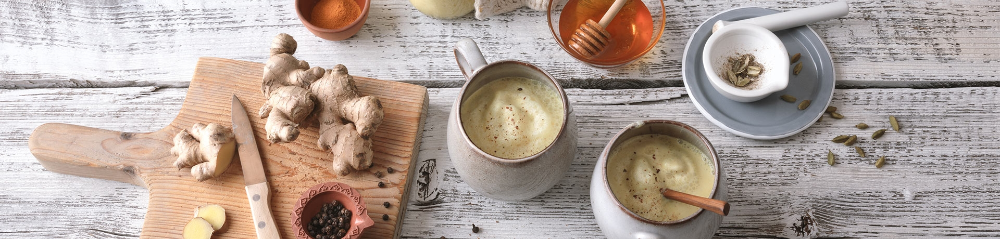

Kurkuma Latte (Golden Milk)

Zutaten:
- 1 l Hafermilch
- 2 TL Kurkuma
- 2 TL Honig
- 1 TL Zimt
- 4 Kardamom Kapseln
- 1 Stück Ingwer
- 1 Prise Pfeffer
Ran an den Herd!
- Hafermilch 2-3 Minuten erhitzen, bis sie heiß ist, aber nicht kocht.
- Kurkuma, Honig, Zimt, Kardamom, Ingwer in Scheiben und Pfeffer unterrühren. Etwas ziehen lassen, dann durch ein feines Sieb passieren und mit einem Milchaufschäumer noch etwas aufschäumen. Servieren.